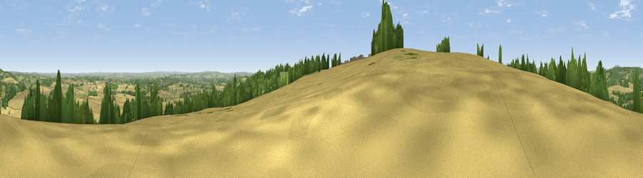

Viewpoint near Monkhopton
#10735 in England · top 25% of its area beats it · near MonkhoptonWhere it is
The exact computed spot (SO 66775 93325). Click the marker for map links.
The view, rendered

A 360° render of this exact spot computed from the terrain model, tree cover and land cover — summer colours, afternoon light, calibrated against photographs of famous viewpoints. Real trees, hedges and buildings will differ in detail.
The panorama
Grey silhouette: terrain skyline in each direction (720 bearings, Earth curvature and refraction included). Dashed green: skyline with trees (+15 m) and buildings (+8 m) as obstacles. Blue strip: how far the ground is visible on each bearing.
Where the view opens
Wedge length = distance to the farthest visible ground on that bearing (vegetation-aware). Rings at 10, 25 and 50 km.
What fills the view
51% cropland · 25% grassland · 22% woodland · 2% built-up
Angular shares of the visible panorama (visual magnitude), not map area. Landscape diversity 0.48 (0–1 Shannon).
Key numbers
More beautiful places nearby
The staircase of upgrades: each row has a higher view potential than everything closer. Driving times are estimates from straight-line distance, calibrated against real road routing — check an actual route before setting out.
| Place | Direction | Drive | Score |
|---|---|---|---|
| Apley Terrace | NE · 7 km | ~15 min | 65.1 |
| Viewpoint near Much Wenlock | NNW · 8 km | ~16 min | 69.2 |
| Viewpoint near Harley | NW · 9 km | ~18 min | 76.8 |
| Viewpoint near Harley | NW · 9 km | ~18 min | 79.9 |
| Viewpoint near Abdon | SW · 10 km | ~19 min | 82.6 |
| Viewpoint near Burwarton | SW · 11 km | ~21 min | 83.4 |
| Viewpoint near Little Wenlock | NNW · 15 km | ~27 min | 86.6 |
| North Hill | SSE · 48 km | ~69 min | 86.8 |
52.53676, -2.49127 · source: screening · position refined by local search. Computed location — check access rights before visiting.